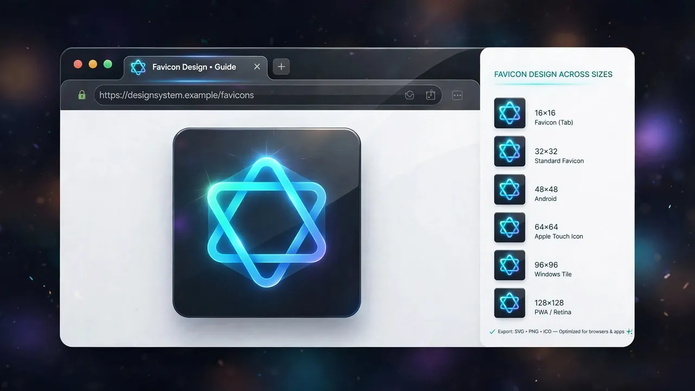
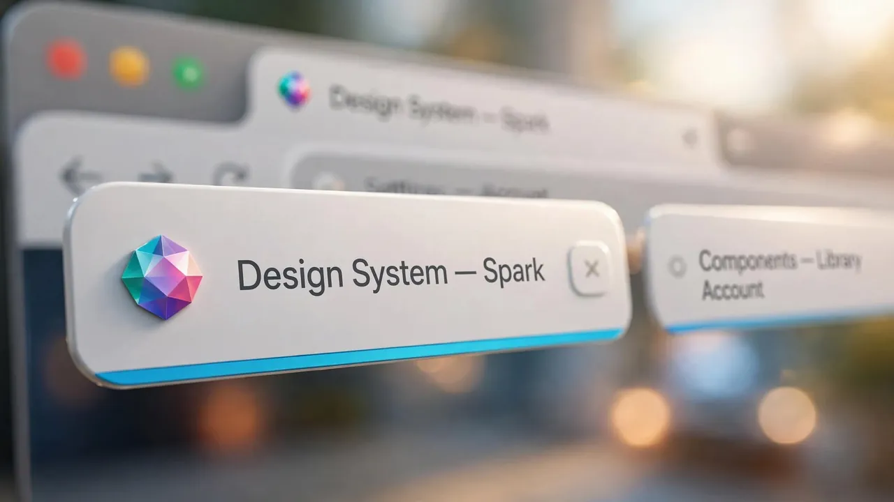
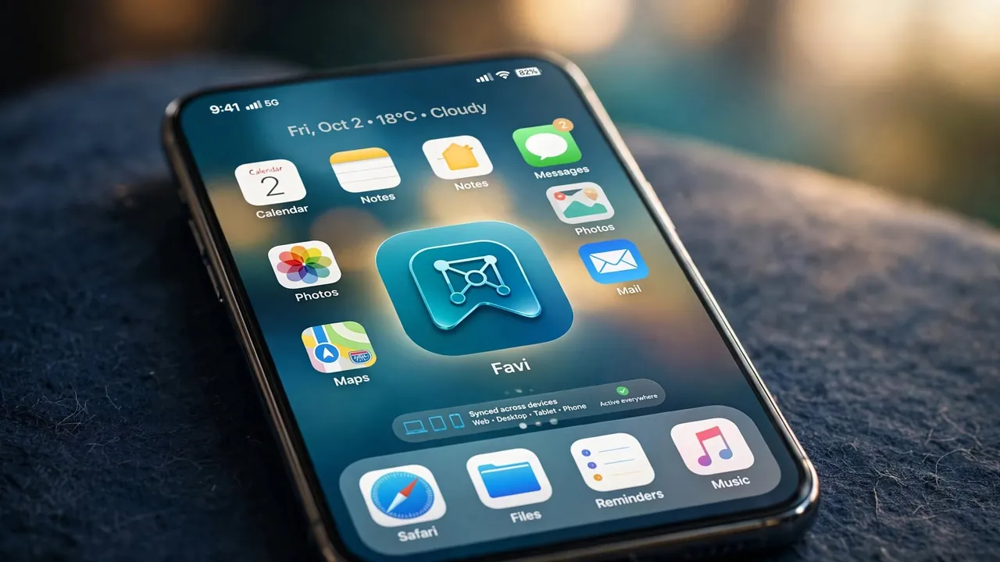
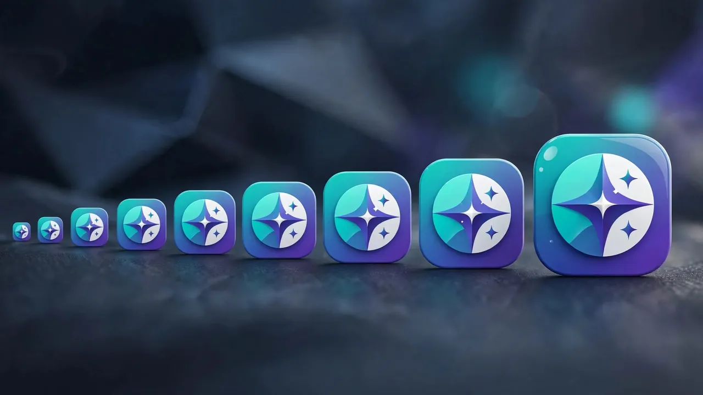

How to Make a Favicon That Looks Right in Every Browser Tab
A favicon is the small icon shown in a browser tab, bookmark and history for your site. Here are the sizes you actually need, how to make one, and the HTML to add it so it shows everywhere.
By Mubasher Hussain · Published 2026-07-26 · Updated 2026-10-03 · 1062 words · about 5 minute read

A favicon is the tiny icon that appears in a browser tab, next to a bookmark, and on a phone home screen when someone saves your site. It is small, but it does a lot of work: it makes your site recognisable among a row of open tabs and lends it a finished, professional feel. Making one that looks crisp everywhere takes a little more than shrinking your logo, because favicons appear at many sizes and in several contexts. The Favicon Generator produces the right files in your browser, and this article explains what you need.
We will cover what a favicon actually is, the sizes and formats modern browsers expect, how to design something legible at 16 pixels, and how to add it to your site.
Why one size is not enough
In the early web a favicon was a single 16×16 icon. Today the same icon appears at many sizes: 16 and 32 pixels in browser tabs, 180 pixels for Apple home-screen icons, 192 and 512 pixels for Android and progressive web apps, and more. A single tiny image scaled up to those larger contexts looks blurry, while a large image scaled down to 16 pixels often turns into an unreadable smudge. That is why a proper favicon is really a set of images at several sizes, each tuned to look sharp at its own scale.

The formats that matter
A few formats cover every case:
- ICO: the traditional favicon container, still useful because it can bundle several sizes and is universally supported.
- PNG: used for the individual sized icons (32, 180, 192, 512) referenced in modern HTML.
- SVG: an increasingly supported option that scales perfectly to any size from a single small file, ideal for simple, flat icons.
A modern setup usually provides an SVG for browsers that support it, PNGs at the key sizes for home screens and apps, and an ICO as a fallback.
Your favicon will most often be seen at 16×16, smaller than a single letter of this text. Intricate logos vanish at that size. Simplify: one bold shape, a single letter, or a stripped-down mark reads far better than a detailed logo shrunk down.
Designing a legible tiny icon
The constraint of 16 pixels forces good decisions. Use a simple, high-contrast shape that is recognisable in silhouette. Avoid thin lines, which disappear, and small text, which becomes illegible. A single strong colour against a clear background works better than a gradient. Many well-known sites use just the first letter of their name or a single geometric mark as their favicon precisely because those survive extreme scaling. If your full logo is complex, design a simplified "icon" version specifically for small sizes.
Adding the favicon to your site
Once you have the icon files, they are referenced in the HTML head with a few link tags, one pointing to the SVG or ICO, others giving the PNG sizes for Apple and Android, plus a web-app manifest for progressive web apps. A generator produces both the image files and the exact markup to paste in, which saves you assembling it by hand. After adding it, remember that browsers cache favicons aggressively; you may need a hard refresh or a cache clear to see a newly-updated icon.

Turn any image into a complete favicon set, the sizes, formats and HTML you need, entirely in your browser. Your source image is never uploaded.
From logo to finished favicon
The smooth workflow is to start with a square, high-resolution version of your mark, simplify it if it is detailed, and let the generator produce every required size and format at once. If you need to prepare the source first, an image resizer gets it square and correctly sized, an image format converter handles any format changes, and a color picker helps you match the icon's colour to your brand exactly.
Doing it in the browser keeps an unreleased logo or brand asset private, the generator reads your image locally and builds the icon set on your device, so nothing is uploaded. That is a small but real benefit when the favicon is for a project that has not launched yet.
Testing your favicon and avoiding the cache trap
Once your favicon is in place, it is worth actually checking it in the situations where people will see it, because a design that looks fine at large size can disappoint at 16 pixels. Open your site in a browser tab and glance at the icon among your other tabs, is it recognisable, or a muddy blob? Bookmark the page and check the bookmark bar. On a phone, add the site to your home screen and see whether the larger icon is crisp. These few checks catch the common problems: an icon too detailed to read small, or a home-screen icon that appears blurry because a large size was missing.

The single most common favicon frustration is the browser cache. Browsers hold on to favicons aggressively, so after you upload a new one you may keep seeing the old icon, or none at all, long after the change is live. This is normal and does not mean the setup is broken. A hard refresh, opening the icon file's URL directly, or testing in a private window usually reveals the current version. When you deploy a favicon update to a live site, expect that returning visitors may see the old icon for a while until their cache expires; it is not a fault, just the caching that makes favicons load quickly in the first place.
A favicon is a tiny detail that quietly signals a site is properly built. Provide the icon at the sizes and formats browsers expect, design it to stay legible at 16 pixels, add the correct markup, and your site will look sharp and recognisable everywhere it appears, from a crowded tab bar to a phone home screen.